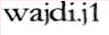

Wajdi Aljedaani
PhD Candidate
Computing and Information Science
Rochester Institute of Technology (RIT)
@gmail.com
On the Job Market!
Wajdi Aljedaani (Wajdi Aljedaani) is a Ph.D. candidate in Computing and Information Sciences at Rochester Institute of Technology (RIT), being advised by Dr. Stephanie Ludi. He has an M.Sc. in Software Engineering from Rochester Institute of Technology (RIT, USA) and a B.Sc. in Software Engineering from Athlone Institute of Technology (AIT).
He is the recipient of the Best Paper Award at the 2017 IEEE International Conference on Software Architecture (ICSA) for the paper "Understanding Software Vulnerabilities Related to Architectural Security Tactics: An Empirical Investigation of Chromium, PHP and Thunderbird".
His main research interests are in the domain of Software Engineering:
- Software Security (e.g., ESEC/FSE'19, JSS'19, ICSA'17 )
- Software Architecture (e.g., ICSA'20, EMSE'16 )
- Program Analysis and Source Code Manipulation (e.g., FTfJP'20, JSS'16 )
- Mining Software Repositories (e.g., MSR'17 )
Let us change our traditional attitude to the construction of programs. Instead of imagining that our main task is to instruct a computer what to do, let us concentrate rather on explaining to human beings what we want a computer to do.